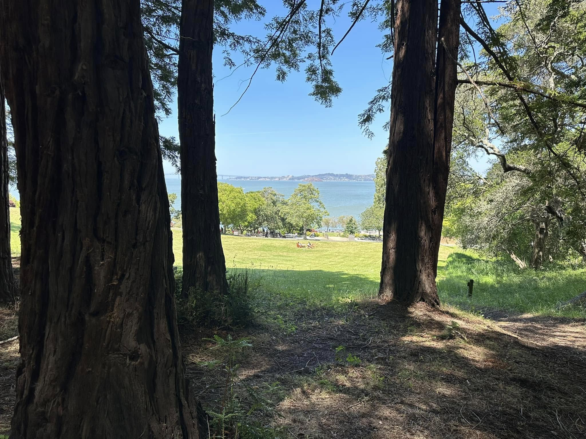
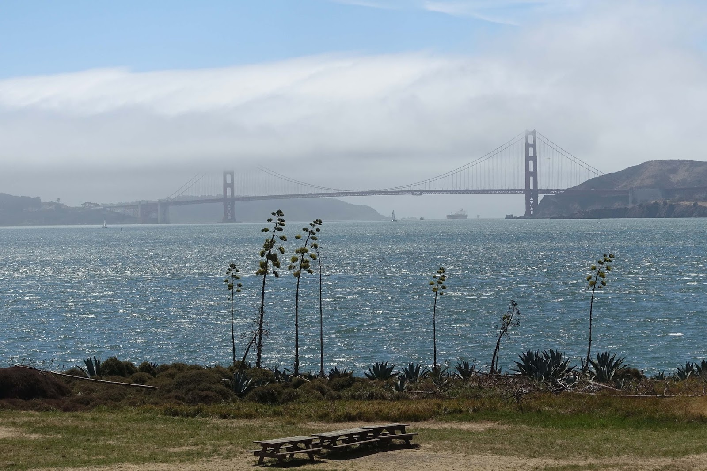

Die Nebelwand über San Francisco und der Golden Gate Brücke
1984–1986
Wenn im Hochsommer mal wieder das Wochenende vor der Tür stand und der übliche Westwind wehte, dann schauten wir uns den Wetterbericht an. Insbesondere interessierte uns die Temperaturvorhersage für Contra Costa auf der anderen Seite der Bay. Waren für Concord und Walnut Creek Temperaturen von über 100 Grad Fahrenheit angesagt, dann wussten wir: die aufsteigende Hitze im Inland würde den Nebel durch das Golden Gate saugen – und wir würden in unserem Häuschen im Sunset District in Nebel und Kälte sitzen.
Dann planten wir das Wochenende eben anderswo ein. Zum Beispiel in San Jose. Oder in Contra Costa. Wir machten es uns dabei gerne bequem. Klasse fanden wir die Öffnungszeiten in Kalifornien. Manche Geschäfte hatten rund um die Uhr geöffnet, sieben Tage die Woche. So auch unser Safeway unten am Strand. Dorthin fuhren wir oft samstags gegen Mitternacht vor dem Schlafengehen und kauften ein, was wir für unseren Ausflug brauchten. Die Regale waren voll mit frischer Ware und der Laden menschenleer.
Am Samstag- oder Sonntagmorgen brachen wir auf. Wir hatten bereits unseren Lieblingskäse vorbereitet: Philadelphia-Frischkäse gemischt mit den Kräutern aus unserem Garten. Der wurde zusammen mit den übrigen Utensilien in den Picknickkorb gepackt. Auf dem Weg Richtung Golden Gate noch rasch ein frisches Baguette gekauft, und ab ging's.
Oft fuhr man bereits auf der Brücke aus dichtem Nebel direkt in die gleißende Sonne. Und plötzlich war er da: der „California Sky“ – azurblauer Himmel ohne ein einziges Wölkchen.
Dann ging es weiter Richtung Tiburon. Es gab zwei Möglichkeiten, den Tag nebelfrei zu genießen. Entweder parkte man das Auto am Hafen von Tiburon und fuhr mit dem Schiff nach Angel Island. Oder man fuhr noch ein Stück weiter bis zum einsam gelegenen Paradise Beach. Ein State Park mit Zugang zum eiskalten Wasser. Aber es gab Picknickplätze. Und auf einem davon ließen wir uns nieder.

Manchmal nahmen wir einen kleinen Hibachi-Grill mit und brutzelten etwas darauf. Oder wir blieben bei Baguette, Käse und einer Flasche Wein. Wir genossen die Sonne, die Wärme und die salzige Brise. Mit einem guten Buch verging die Zeit wie im Flug.
Ähnlich war es auf Angel Island. Allein die Bootsfahrt liebten wir. Die Gischt spritzte, die Luft war salzig, und der Blick auf die im Nebel liegende Golden Gate Bridge rundete den Eindruck ab.
Bis zum Strand waren es einige Kilometer Fußmarsch. Aber wir wurden belohnt. Auf dem Rasen liegend hatte man direkten Blick auf das Golden Gate, den Nebel, der durch die Meerenge flutete, und auf die Sonne, die ihn bis zum Nachmittag auf dem Ozean festhielt. Die warme Sonne auf unserer Haut tat uns gut. Wir hätten am liebsten einen Vorrat davon mit nach Hause genommen. Dort wartete wohl bereits der Nebel auf uns.

Auch an den Nachhauseweg von unseren Ausflügen nördlich von San Francisco denke ich gerne zurück. Es herrschte eine wunderbare Stimmung. Die Menschen damals waren lebenslustig, aufgeschlossen und warmherzig. Alle kamen von ihren Wochenendausflügen zurück und waren auf dem Weg in die Stadt. Schon oberhalb der Golden Gate Bridge kam man meist nur noch im Schritttempo voran. Kein Problem. Alle hatten die Fenster heruntergekurbelt, hatten Spaß und hörten laute Musik. Wir auch.
Unser Haussender war KFOG auf der Frequenz 104,5. Wie gerne hörten wir den Satz:
„This is Kay FOG, One-Oh-Four Point Five.“
Und dann unsere Lieblingslieder. Allen voran:
„We built this city, we built this city on rock and roll“
von Jefferson Starship, die aus San Francisco stammten.
Und wenn wir dann auf der anderen Seite, auf dem Presidio, angekommen waren, gesellte sich zum Salz- und Meergeruch der Duft von gutem Essen: Olivenöl, Knoblauch und Meeresfrüchten. Herrlich! Ich werde diese einzigartige Ouvertüre aus Gerüchen, Musik und Lebensfreude nie vergessen.
Wir waren zuhause in unserer Stadt!
Die besondere Stimmung auf unserer Heimreise in die "City" habe ich als Song festgehalten.: „San Francisco 1985“.